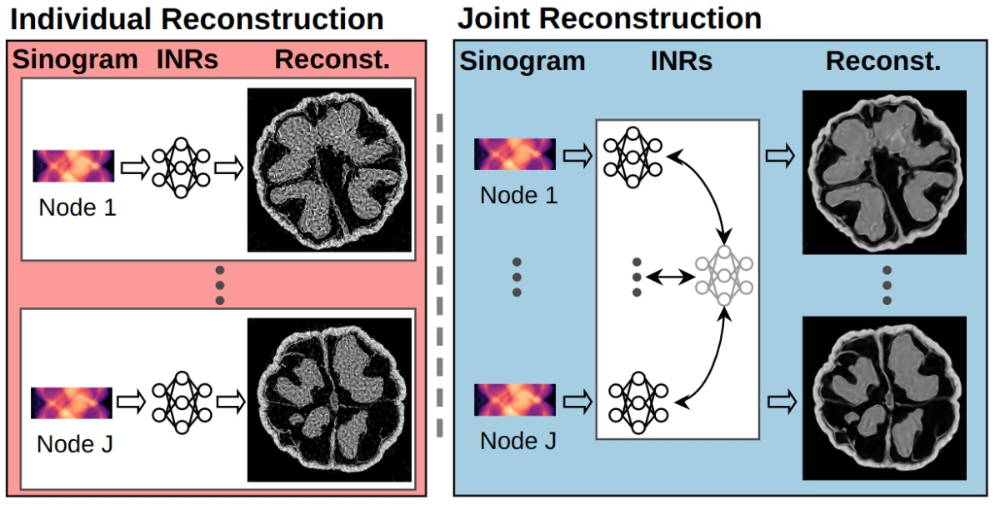

Implicit Neural Representations for Robust Joint Sparse-View CT Reconstruction
TMLR 2024* = Co-first authorsTransactions on Machine Learning Research

In brief
CT machines routinely scan similar subjects — patients in a hospital, copies of an industrial part — yet implicit neural representations reconstruct each scan from scratch. This work reconstructs multiple objects jointly: each object gets its own INR whose parameters are tied to a shared latent distribution in a Bayesian framework, so common structure learned across objects regularizes every individual reconstruction. Unlike supervised or diffusion-based approaches, it needs no pre-curated dataset — a practical fit for privacy-constrained medical and time-sensitive industrial settings.
Key takeaways
- Prior INR joint-reconstruction work targeted training speed; this is the first tailored to improve final reconstruction quality, via latent variables that capture cross-object patterns and regularize each per-object INR through a KL term.
- Needs no external dataset — unlike supervised and diffusion-based CT methods that depend on large domain-matched collections, which privacy regulation (medical) or timeliness (industrial) often rules out.
- Higher reconstruction quality under sparse views and robust to measurement noise across standard numerical metrics.
- The learned latent variables double as an initialization for new objects, speeding up subsequent reconstructions.
- The formulation is not CT-specific: the same joint-INR principle transfers to other ill-posed inverse problems such as MRI and ultrasound.
Abstract
Computed Tomography (CT) is pivotal in industrial quality control and medical diagnostics. Sparse-view CT, offering reduced ionizing radiation, faces challenges due to its under-sampled nature, leading to ill-posed reconstruction problems. Recent advancements in Implicit Neural Representations (INRs) have shown promise in addressing sparse-view CT reconstruction. Recognizing that CT often involves scanning similar subjects, we propose a novel approach to improve reconstruction quality through joint reconstruction of multiple objects using INRs. This approach can potentially utilize the advantages of INRs and the common patterns observed across different objects. While current INR joint reconstruction techniques primarily focus on speeding up the learning process, they are not specifically tailored to enhance the final reconstruction quality. To address this gap, we introduce a novel INR-based Bayesian framework integrating latent variables to capture the common patterns across multiple objects under joint reconstruction. The common patterns then assist in the reconstruction of each object via latent variables, thereby improving the individual reconstruction. Extensive experiments demonstrate that our method achieves higher reconstruction quality with sparse views and remains robust to noise in the measurements as indicated by common numerical metrics. The obtained latent variables can also serve as network initialization for the new object and speed up the learning process.
BibTeX
@article{zhu_nerf,
title = {Implicit Neural Representations for Robust Joint Sparse-View CT Reconstruction},
author = {Shi, Jiayang and Zhu, Junyi and Pelt, Daniel M. and Batenburg, K Joost and Blaschko, Matthew B.},
year = {2024},
journal = {Transactions on Machine Learning Research},
url = {https://arxiv.org/abs/2405.02509},
}